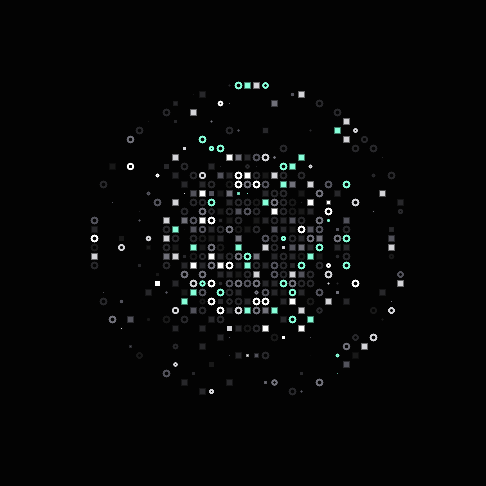

@agentica/webite

Agentica

Agentic AI Framework specialized in LLM Function Calling
enhanced by TypeScript compiler skills
Homepage // Documentation // Tutorials // Playground
Agentica is an open-source framework that makes working with AI agents simple and reliable. It helps you integrate structured function calls with Large Language Models (LLMs) without the usual headaches.
Built around Typia's robust JSON Schema validation, Agentica eliminates the common frustrations of building agent systems - no more dealing with unpredictable outputs or complex integration challenges.
🚀 Key Features
- ✅ Schema-Driven Reliability: Automatically validates and corrects parameters from LLMs.
- 🔄 Automatic Error Correction: Feedback loops to iteratively improve output accuracy.
- 📐 Complex Parameter Support: Easily handle union types, nested objects, and recursive schemas.
- 🌐 OpenAPI Integration: Convert existing APIs into powerful agent capabilities effortlessly.
- 👨💻 Exceptional Developer Experience: TypeScript-first approach with automatic schema generation.
- 🛠️Model Context Protocol(MCP) Support: Seamlessly integrate with various LLMs, including Claude Desktop, Cursor, and more.
⚡ Quickstart
Step 1. Setup Agentica project
For more details, check out the Getting Started guide.
You can create a new Agentica project using the following command:
# npm
npx agentica@latest start
# yarn
yarn agentica start
# pnpm
pnpx agentica start
# bun
bunx agentica start
Step 2. Create your own AI agent
Open src/index.ts and create your own agent.
Agentica accepts TypeScript types and OpenAPI specifications as input. You can use any of the following:
- TypeScript Types: Define your own types and let Agentica generate the OpenAPI spec for you, powered by Typia.
- OpenAPI Specification: Use an existing OpenAPI spec to create an agent. Agentica converts it for tool calling!
- Custom Controllers: Create your own controllers to extend Agentica's functionality.
import { Agentica } from "@agentica/core";
import typia from "typia";
const agent = new Agentica({
controllers: [
await fetch(
"https://shopping-be.wrtn.ai/editor/swagger.json",
).then(r => r.json()),
typia.llm.application<ShoppingCounselor>(),
typia.llm.application<ShoppingPolicy>(),
typia.llm.application<ShoppingSearchRag>(),
],
});
await agent.conversate("I wanna buy a MacBook Pro");
Step 3. Run your agent
Let's play with your agent!
npm run build
npm run start # 🎉
🌟 Why Choose Agentica?
Traditional LLM frameworks struggle with structured outputs:
| Problem Area | Vanilla LLMs | ✅ Agentica |
|---|---|---|
| Parameter Validation | ❌ Poor reliability | ✅ JSON Schema-driven |
| Complex Data Handling | ❌ Struggles | ✅ Robust Typia support |
| Error Correction | ❌ Manual | ✅ Auto-correcting loop |
| Integration Complexity | ❌ High effort | ✅ Seamless OpenAPI |
📚 Documentation & Tutorials & Paper
💬 Community & Support
👐 Contributing
We welcome contributions from the community! Check out our CONTRIBUTING.md to get started.
⚖️ License
Agentica is open-source and available under the MIT License.
Empowering developers to build reliable and structured AI agents effortlessly.